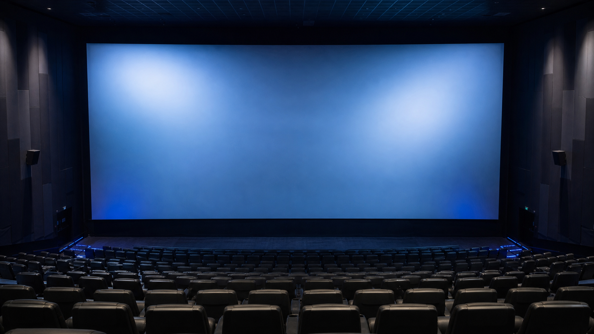

如果一部电影值得专程去看大银幕，美亚云门店通常会出现在广州影迷的候选名单里。这里的 IMAX 厅有 349 个座位，官方资料写明配置约 21 米 × 12 米银幕和 12.1 声道。真正影响当晚体验的，往往是你在选座图上点下的那个位置。

先认识这个厅
美亚 IMAX 激光影城（云门店）位于广州市白云区百顺北路 1 号新世界云门 New Park 3 楼。影城把它称为广州首个第二代 IMAX 激光影厅。对观众来说，最直观的差别是银幕够大、亮度稳定，声音也不只从正前方压过来。
这类厅最适合动作、科幻、动画和带 IMAX 扩展画幅的电影。普通剧情片当然也能看，但如果影片本身没有大画面或强声音设计，票价差额未必都能换成明显的体验差距。
座位怎么选
我不会死记某一排某一号。排号可能因购票平台、维护或临时锁座发生变化，认准影厅中轴线更稳。先把座位图左右对半分，优先拿中间三分之一区域，再考虑前后距离。
中轴线附近
中部偏后
示意图只表达选座逻辑，不对应影城实际排号。
想要最均衡
选横向正中，纵向落在全厅中部稍后的位置。这里比较容易同时照顾画面完整度、字幕阅读和声场，不会因为太靠前而一直抬头，也不会因为太靠后削弱巨幕的包围感。
想要更强的巨幕感
在中轴线不变的前提下，往前挪一到两排。画面会更容易填满视野，动作场面更有压迫感。容易晕 3D、在意颈部舒适度，或者影片很长，就别再继续往前。
热门场次只剩边位
我的取舍顺序是：中轴线附近但前后差一两排，优先于“排数理想但位置很偏”。最前几排、最后一排和最外侧位置都尽量避开。央视的影院选座科普也提醒，偏两侧、仰角过大的前排，以及离后置音响太近的最后排，都可能影响视听体验。
一句话选座：先找中轴，再选中部偏后；想要冲击感就前移一两排，想坐得轻松就后移一两排。
出发前再看三件事
- 确认场次标识。同一家影院有多个影厅，购票时要看清是否写着 IMAX 或 IMAX 激光。
- 看影片版本。带 IMAX 特制拍摄、扩展画幅或专属制版标识的电影，更能用上这块银幕。
- 重新检查座位图。本文给的是选座方法，不是永久座位表；当天排号和可售区域以购票页面为准。
资料来源
- 美亚官方影院介绍：影厅代际、座位数、银幕尺寸和声道配置。
- 猫眼影院页面：影院名称与地址。
- 央视网影院选座科普：前排、边位和最后排的取舍原则。
- IMAX 官方体验介绍：IMAX 影片与放映系统说明。
资料核对日期：2026 年 8 月 2 日。具体排片、票价和座位开放情况以影院当天页面为准。